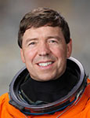

Lyndon B. Johnson Space Center
Houston, Texas 77058
|
National Aeronautics and Space Administration Lyndon B. Johnson Space Center Houston, Texas 77058 |
 |
Biographical Data |
||
Michael Reed Barratt (M.D., M.S.)
NASA Astronaut
PERSONAL DATA: Born on April 16, 1959 in Vancouver, Washington. Considers Camas, Washington, to be his home town. Married to the former Michelle Lynne Sasynuik. They have five children. His mother, Donna Barratt, resides in Camas, Washington. Personal and recreational interests include writing, sailing, boat restoration and maintenance, family and church activities.
EDUCATION: Graduated from Camas High School, Camas, WA, 1977. B.S., Zoology, University of Washington, 1981. M.D., Northwestern University, 1985. Completed 3-year residency in Internal Medicine at Northwestern University in 1988. Completed Chief Residency year at Veterans Administration Lakeside Hospital in Chicago in 1989. Completed residency and Master’s program in Aerospace Medicine at Wright State University in 1991. Board certified in Internal and Aerospace Medicine.
ORGANIZATIONS: Aerospace Medical Association and the American Association for the Advancement of Science.
SPECIAL HONORS: Hubertus Strughold Award for Contributions to Space Medicine Research, 2011; Joseph P. Kerwin award for Advancements in Space Medicine, Aerospace Medical Association, 2010; W. Randolph Lovelace Award (1998), Society of NASA Flight Surgeons; Melbourne W. Boynton Award (1995), American Astronautical Society; USAF Flight Surgeons Julian Ward Award (1992); Wright State University Outstanding Graduate Student, Aerospace Medicine (1991); Alpha Omega Alpha Medical Honor Society, Northwestern University Medical School, Chicago, IL (1988); Phi Beta Kappa, University of Washington, Seattle, WA (1981).
EXPERIENCE: Dr. Barratt came to NASA JSC in May 1991 employed as a project physician with KRUG Life Sciences, working on medical systems for Space Station Freedom. In July 1992, he was assigned as NASA Flight Surgeon, working in Space Shuttle Medical Operations. In January 1994, he was assigned to the joint U.S./Russian Shuttle - Mir Program, working and training extensively in the Cosmonaut Training Center, Star City, Russia, in support of the Mir-18/STS-71 and subsequent missions.
From July 1995 to July 1998, he served as Medical Operations Lead for the International Space Station (ISS). A frequent traveler to Russia, he worked with counterparts at the Gagarin Cosmonaut Training Center and Institute of Biomedical Problems as well as other international partner centers. Dr. Barratt served as lead crew surgeon for the first expedition crew to ISS from July 1998 until he was selected as an astronaut candidate.
Dr. Barratt serves as Associate Editor for Space Medicine for the journal, Aerospace Medicine and Human Performance and is senior editor of the textbook, Principles of Clinical Medicine for Space Flight.NASA EXPERIENCE: Selected as a mission specialist by NASA in July 2000, Dr. Barratt reported for training in August 2000. Following the completion of 2 years of training and evaluation, he was assigned technical duties in the Astronaut Office Station Operations Branch.
Assigned to long duration flight training in 2005, Dr. Barratt launched as flight engineer on Soyuz TMA-14 on March 26, 2009, to the ISS and served as a member of Expeditions 19 and 20. This time period included the transition from three to six permanent ISS crewmembers, two EVAs, two visiting space shuttles and the arrival of the first Japanese H-II Transfer Vehicle (HTV). Dr. Barratt performed two EVAs in the Russian Orlan suit and participated in further station construction and onboard experiements. Completing 199 days in space, Dr. Barratt landed on October 11, 2009.
Dr. Barratt served as Mission Specialist on STS-133 (February 24 to March 9, 2011), was the 39th and final mission for Space Shuttle Discovery, for which he was lead for Rendezvous and Station Robotics. During the 13-day flight, the Discovery crew delivered the Permanent Multipurpose Module (PMM) and the fourth Express Logistics Carrier (ELC) to the ISS. The mission’s two spacewalks assisted in outfitting the truss of the station and completed a variety of other tasks designed to upgrade station systems. The mission was accomplished in 202 Earth orbits, traveling 5.3 million miles in 307 hours and 3 minutes.
From January of 2012 through April of 2013, Dr. Barratt was Manager of the Human Research Program at NASA Johnson Space Center. This program guides applied research oriented toward mitigating the most prominent health and performance risks associated with human spaceflight. He returned to the astronaut office in May of 2013 to serve as lead for payload science and continue proficiency training.
FEBRUARY 2015